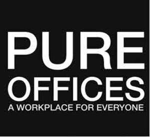
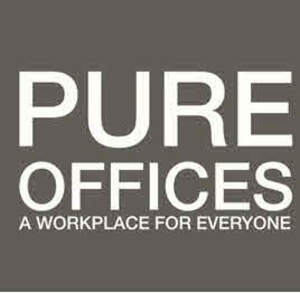
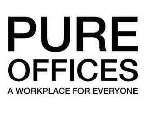

Trade Mark Journal No.2026/010 6 March 2026
UK00004326944 20 January 2026 (35,36,37,42,43)
Mark 1

Mark 2

Mark 3

- Class 35
- Office functions; business office services; Office administration services [for others]; Office management services [for others]; Procurement services for others relating to office requisites; Reception services for visitors [office functions]; Mail sorting, handling and receiving [office functions]; Management of business offices for others; Management on behalf of industrial and commercial enterprises in terms of supplying them with office requisites; Providing temporary office support staff; Office support staff recruitment services; Assistance to industrial or commercial enterprises in the running of their business.
- Class 36
- Office rentals; leasing of office space; letting of office accommodation; Rental and leasing of offices; Rental of office space; Rental of offices for co-working; Real estate management services relating to office premises; Apartment and office rentals; Letting of office space; Renting of offices; Rental of flats, studios and rooms; Real estate management services relating to industrial premises; Provision of flexible office space; Provision of co-working office space; Provision of industrial business space to rent; Rental of studios; Rental of studio space for businesses; Provision of serviced offices.
- Class 37
- Office cleaning services; Cleaning of office buildings and commercial premises; Cleaning of offices; Contract cleaning of offices; Installation, maintenance and repair of office machines and equipment; Interior fitting-out of offices; Maintenance and repair of office buildings; Office machines and equipment installation, maintenance and repair; Wiring of offices for data transmission.
- Class 42
- Hosting software platforms for virtual reality-based work collaboration; Hosting virtual environments; Providing virtual computer environments through cloud computing; Hosting software platforms for the provision of virtual office space; Hosting virtual office environments; Providing virtual office computer environments through cloud computing; Services for the planning [design] of offices; Office layout design services; Architectural services for the design of office facilities; Design of layouts for offices; Design of layouts for office furniture; Design of office space; Design services relating to interior decorating for offices; Office furniture design; Planning [design] of offices; Space planning [design] of interiors.
- Class 43
- Temporary accommodation; leasing and rental of temporary accommodation including offices; provision of facilities for meetings, conferences, congresses, seminars, training and exhibitions; rental of office furniture; Office catering services for the provision of coffee; Event facilities and temporary office and meeting facilities; Hire of temporary office space; Leasing of office furniture; Provision of event facilities and temporary office and meeting facilities; Rental of meeting rooms; Provision of workshop space; Office catering services for the provision of food and drink.
Pure Offices Ltd
Representative: Shoosmiths LLP